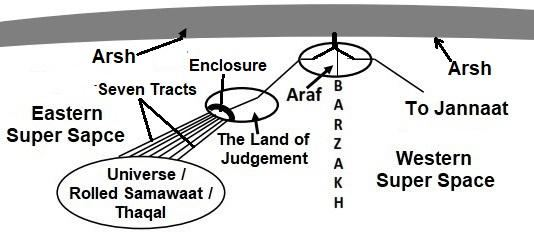

After the Judgment, the Thaqal will evolve into Samawaat (Skies), with each of the Seven Paths revitalizing and connecting directly to a Sky through the Axis of the Universe.
বিচারের পরে, থাকাল সামওয়াতে (আকাশে) বিকশিত হবে, সাতটি পথের প্রতিটি পুনরুজ্জীবিত হবে এবং মহাবিশ্বের অক্ষের মাধ্যমে একটি আকাশের সাথে সরাসরি সংযোগ স্থাপন করবে।
FIGURE 39.5: Seven Paths The paths will have gates on the Land of Judgment. In front of these gates, there will be reception enclosures, guarded by angels. The sinners, whose sins will outweigh their good deeds, will be driven into the enclosures after the Judgment. Subsequently, the sinners will be driven into the paths that will guide them to the designated Skies, while the sub-paths will lead them to their assigned objects of Hell (galaxies). The sinners will be allowed to rest in the enclosures for some time when they utterly repent.

চিত্র 39_5 / Figure 39_5
চিত্র 39.5: সাতটি পথ বিচারের দেশে পথের গেট থাকবে। এই গেটের সামনে, অভ্যর্থনা বেষ্টনী থাকবে, ফেরেশতাদের দ্বারা পাহারা দেওয়া হবে। পাপীরা, যাদের পাপ তাদের ভাল কাজের চেয়ে বেশি হবে, বিচারের পরে ঘেরে তাড়িয়ে দেওয়া হবে। পরবর্তীকালে, পাপীদের সেই পথে চালিত করা হবে যেগুলি তাদের নির্দিষ্ট আকাশে নিয়ে যাবে, যখন উপ-পাথগুলি তাদের নরকের নির্ধারিত বস্তুর (গ্যালাক্সি) দিকে নিয়ে যাবে। পাপীদের কিছু সময়ের জন্য ঘেরে বিশ্রামের অনুমতি দেওয়া হবে যখন তারা পুরোপুরি অনুতপ্ত হবে।
চিত্র 39_5 / Figure 39_5
And the Land will shine with the glory of its Lord, the record will be placed, the Prophets and the witnesses will be brought forward, and a just decision pronounced between them, and they will not be wronged. And to every soul will be paid in full of its deeds, and (God) knows best all that they do.
এবং ভূমি তার প্রভুর মহিমায় আলোকিত হবে, রেকর্ড স্থাপন করা হবে, নবী এবং সাক্ষীদের সামনে আনা হবে এবং তাদের মধ্যে একটি ন্যায়সঙ্গত সিদ্ধান্ত ঘোষণা করা হবে এবং তাদের প্রতি অবিচার করা হবে না। আর প্রত্যেক ব্যক্তিকে তার কৃতকর্মের পূর্ণ প্রতিদান দেওয়া হবে এবং (আল্লাহ) তারা যা করে তা ভালোভাবে জানেন।
10. The Judgment
10. রায়
Allah will address the complaints; even an animal without horns will be given the opportunity to take revenge against an animal with horns. All oppressors will be dealt with severely:
আল্লাহ অভিযোগের সুরাহা করবেন; এমনকি শিংবিহীন পশুকেও শিংওয়ালা পশুর বিরুদ্ধে প্রতিশোধ নেওয়ার সুযোগ দেওয়া হবে। সমস্ত অত্যাচারীদের কঠোরভাবে মোকাবেলা করা হবে:
―When the souls are sorted out; when the female buried alive is questioned: ―For what crime she was killed?‖‖ [Al Quran 81:7-9] Allah will select the people for salvation with utmost mercy and forgiveness. Even the smallest good deed will be taken into account, and many major sins will be forgiven.
- যখন আত্মাগুলি সাজানো হয়; যখন জীবিত কবর দেওয়া মহিলাকে জিজ্ঞাসা করা হয়: "কি অপরাধে তাকে হত্যা করা হয়েছিল?" [আল কুরআন 81:7-9] আল্লাহ পরম করুণা ও ক্ষমার সাথে মানুষকে নাজাতের জন্য নির্বাচন করবেন। এমনকি ক্ষুদ্রতম নেক আমলের হিসাব নেওয়া হবে এবং অনেক বড় গুনাহ মাফ হয়ে যাবে।
10a. Arrival of Allah on the Land of Judgment
10 ক. হাশরের ভূমিতে আল্লাহর আগমন
On the Day of Judgment, Allah will be visible. People will see Him clearly.
কিয়ামতের দিন আল্লাহকে দেখা যাবে। মানুষ তাকে স্পষ্ট দেখতে পাবে।
―It is narrated by Abu Hurairah: Once a few people asked, ‗Oh Prophet (pbuh), will we see Allah on the Day of Judgment?‘ To answer, Prophet (pbuh) said, ‗In a cloudless full moon night, do you find any obstruction to see the Moon?‘ They said, ‗No, Oh Prophet (pbuh)‘. Prophet (pbuh) again said, ‗In a cloudless clear sky do you find any obstruction to see the Sun?‘ Everybody said, ‗No, Oh Prophet‘. Then Prophet (pbuh) said, ‗On the day of Judgment, exactly in this way you will see Allah, without any obstruction‖ [Bukhari]
আবু হুরায়রা (রাঃ) থেকে বর্ণিতঃ একবার কয়েকজন লোক জিজ্ঞেস করল, ‘হে নবী (সাঃ) আমরা কি বিচারের দিন আল্লাহকে দেখতে পাব?’ উত্তরে রাসূলুল্লাহ (সাঃ) বললেন, ‘মেঘহীন পূর্ণিমার রাতে চাঁদ দেখতে আপনি কি কোন বাধা পান? রাসুল (সাঃ) আবার বললেন, ‘মেঘহীন স্বচ্ছ আকাশে সূর্য দেখার কোনো বাধা কি তুমি পাও?’ সবাই বললো, ‘না, হে নবী’। অতঃপর নবী (সাঃ) বললেন, ‘কিয়ামতের দিন ঠিক এভাবেই তুমি আল্লাহকে দেখতে পাবে, কোনো বাধা ছাড়াই।’ [বুখারি]
According to the Hadith, initially, Allah will appear on the Day of Judgment as a normal human being, but people will refuse to accept Him as Allah. Therefore, He will leave and return later ceremonially, after the marshalling for the Judgment. The Land of Judgment will be in the hand of Allah. It is the hand of His nafs. The hand of nafs is invisible to our eyes because the force fields are invisible. But, 'Allah in form' will appear on the Land of Judgment. 'He in form' will be visible, like a human [Allah is discussed in Chapter-1]. At present, 'Allah in form' resides in the Arsh. He is not approachable because the universes are sustained and evolved by Him through extremely powerful force fields extended from His nafs, permeating His body in form. He sustains and evolves this universe (Samawaat) with the right hand of His nafs, while sustaining the Arsh with the left hand of His nafs. Each hand of the nafs comprises 15 to 30 force fields. Some of the force fields of His nafs may also extend through His face and chest in form. Therefore, at present, Allah is sustaining and evolving the universes with extreme power and light radiating from His 'body in form'. The radiating power and light make Him (He in form) unapproachable. But on the Day of Judgment, the universe (Samawaat) will be rolled up in His right hand (hand of nafs) into a compact state, and its evolution will be temporarily halted for the duration of the Judgment. The Arsh will also be compacted without crushing its shape or structure. The Arsh will come close over the heads of the resurrected people. At that time, eight angels will bear the Arsh to prevent it from falling onto Araf, Thaqal, or Land of Judgment. Therefore, the powers radiating from Him will be diminished on the Day of Judgment, making Him approachable and appearing like a human.
হাদিসে বলা হয়েছে, প্রাথমিকভাবে বিচারের দিন আল্লাহ একজন সাধারণ মানুষ হিসেবে আবির্ভূত হবেন, কিন্তু মানুষ তাকে আল্লাহ হিসেবে মানতে অস্বীকার করবে। অতএব, তিনি চলে যাবেন এবং পরে আনুষ্ঠানিকভাবে, বিচারের জন্য মার্শালিং পরে ফিরে আসবেন। বিচারের জমি আল্লাহর হাতে থাকবে। এটি তাঁর নফসের হাত। নফসের হাত আমাদের চোখে অদৃশ্য কারণ বল ক্ষেত্রগুলি অদৃশ্য। কিন্তু, 'আল্লাহ রূপে' বিচারের দেশে হাজির হবেন। 'তিনি রূপে' দৃশ্যমান হবেন, মানুষের মতো [আল্লাহর আলোচনা করা হয়েছে অধ্যায়-১ এ]। বর্তমানে আরশে 'আল্লাহ রূপে' অবস্থান করছেন। তিনি সান্নিধ্যপ্রাপ্ত নন কারণ মহাবিশ্বগুলি তাঁর দ্বারা টিকে আছে এবং বিকশিত হয়েছে তাঁর নফস থেকে প্রসারিত অত্যন্ত শক্তিশালী বল ক্ষেত্রগুলির মাধ্যমে, তাঁর দেহের আকারে বিস্তৃত। তিনি তাঁর নফসের ডান হাত দিয়ে এই মহাবিশ্বকে (সামাওয়াত) টিকিয়ে রাখেন এবং বিকশিত করেন এবং আরশকে তাঁর নফসের বাম হাতে টিকিয়ে রাখেন। নফসের প্রতিটি হাত 15 থেকে 30টি বল ক্ষেত্র নিয়ে গঠিত। তাঁর নফসের কিছু শক্তির ক্ষেত্রও তাঁর মুখমণ্ডল ও বুকে আকারে প্রসারিত হতে পারে। অতএব, বর্তমানে আল্লাহ মহাবিশ্বকে টিকিয়ে রাখছেন এবং বিকশিত করছেন চরম শক্তির সাথে এবং তার 'আকৃতিতে শরীর' থেকে বিকিরণকারী আলো। বিকিরণকারী শক্তি এবং আলো তাকে (তিনি আকারে) অগম্য করে তোলে। কিন্তু কিয়ামতের দিন, মহাবিশ্ব (সামাওয়াত) তাঁর ডান হাতে (নফসের হাতে) একটি সংক্ষিপ্ত অবস্থায় গুটিয়ে যাবে এবং বিচারের সময়কালের জন্য এর বিবর্তন সাময়িকভাবে বন্ধ হয়ে যাবে। আরশ তার আকৃতি বা গঠনকে পিষে না দিয়ে কম্প্যাক্ট করা হবে। আরশ পুনরুত্থিত মানুষের মাথার কাছে আসবে। সেই সময়, আটজন ফেরেশতা আরশ বহন করবেন যাতে এটি আরাফ, থাকাল বা বিচারের ভূমিতে না পড়ে। অতএব, তাঁর কাছ থেকে বিচ্ছুরিত শক্তি বিচারের দিন হ্রাস পাবে, যা তাঁকে সান্নিধ্য লাভ করবে এবং মানুষের মতো দেখাবে।
10b. The Balance of Judgment
10 খ. বিচারের ভারসাম্য
Our sins and good deeds will be measured by a balance. How will this balance look like? When we think about Allah, we should strive to comprehend His level of intelligence, elegance, and abilities. He has created our eyes, ears, hearts, and brains; He has created the DNA code and the living cell; He has created the perfectly fine-tuned universes, and the mighty CCU (Central Computer of the Universes, as described in Section-9 of Chapter-6). Our memory data are collected every night by the angels and deposited in our files in the CCU. Thus, the CCU possesses the complete record of our thoughts throughout our lives, as the following verse indicates:
আমাদের পাপ এবং ভাল কাজ একটি ভারসাম্য দ্বারা পরিমাপ করা হবে. এই ভারসাম্য কেমন হবে? আমরা যখন আল্লাহ সম্পর্কে চিন্তা করি, তখন আমাদের উচিত তাঁর বুদ্ধিমত্তা, কমনীয়তা এবং ক্ষমতার মাত্রা বোঝার চেষ্টা করা। তিনি আমাদের চোখ, কান, হৃদয় এবং মস্তিষ্ক সৃষ্টি করেছেন; তিনি ডিএনএ কোড এবং জীবিত কোষ তৈরি করেছেন; তিনি নিখুঁতভাবে সূক্ষ্ম সুরযুক্ত মহাবিশ্ব এবং শক্তিশালী সিসিইউ (মহাবিশ্বের কেন্দ্রীয় কম্পিউটার, অধ্যায়-6-এর অধ্যায়-9-এ বর্ণিত) তৈরি করেছেন। আমাদের স্মৃতি ডেটা প্রতি রাতে ফেরেশতাদের দ্বারা সংগ্রহ করা হয় এবং সিসিইউতে আমাদের ফাইলগুলিতে জমা করা হয়। এইভাবে, সিসিইউ আমাদের সারা জীবন আমাদের চিন্তার সম্পূর্ণ রেকর্ড রাখে, যেমনটি নিম্নলিখিত আয়াতটি নির্দেশ করে:
―It is He who does take your souls by night and has knowledge of all that you have done by day; by day does He raise you up again that a term appointed be fulfilled. In the end, unto Him will be your return. Then He will show you the truth of all that you did‖ [Al Quran 6:60]
-তিনিই রাত্রিকালে তোমাদের আত্মা কবজ করেন এবং দিনে তোমরা যা কিছু করেছ সে সম্পর্কে তাঁর জ্ঞান রয়েছে; দিনে দিনে তিনি তোমাদেরকে পুনরুত্থিত করবেন যাতে নির্ধারিত মেয়াদ পূর্ণ হয়। শেষ পর্যন্ত, তাঁর কাছেই তোমাদের প্রত্যাবর্তন হবে। অতঃপর তিনি তোমাদের সকলের সত্যতা দেখাবেন যা তোমরা করেছ” [আল কুরআন 6:60]
On the other hand, there are two angels, Kiraman and Katibin, sitting on our shoulders. One writes down our good deeds, and the other writes down our bad deeds.
অন্যদিকে আমাদের কাঁধে কিরামন ও কাতিবিন নামে দুইজন ফেরেশতা বসে আছেন। একজন আমাদের ভালো কাজগুলো লিখে রাখে, আর অন্যজন আমাদের খারাপ কাজগুলো লিখে রাখে।
It was We Who created man, and We know what dark suggestions his soul makes to him: for We are nearer to him than (his) jugular vein. Behold, two (angels) appointed to learn, one sitting on the right and one on the left. Not a word does he utter but there is a sentinel by him, ready. And the trance of death will bring Truth: "This was the thing which thou wast trying to escape!" [Al Quran 50:16-19] The dark suggestions of a man's soul are recorded in the CCU as brain data. In addition, the events (both good and bad) of his life are recorded by two angels: "Not a word does he utter but there is a sentinel by him." The angels present the records during the trance of death and later deposit them in Illiyin or Sijjin. Illiyin and Sijjin are based in servers connected to the CCU. So, the records go to the CCU. The CCU compares the records kept by angels, Kiraman and Katibin, with the individual's brain-data, from which intentions can be known. If a man has done a bad deed, but his intention was good, then the CCU may transfer the bad deed into the list of good deeds, or may put it into the list of neutral events. This cannot be done by the angels (Kiraman and Katibin) appointed to learn and write the records, because they cannot know the intention. Therefore, the CCU makes the final report of a dead person before he is put into Illiyin or Sijjin. The final decision of putting a man in Illiyin or Sijjin is given by Allah. Soon after the death of a man, his nafs (soul) is developed with his virtual body, and he is produced before Allah. Allah talks to him and gives the final decision. On the Day of Judgment, the final report, produced by the CCU, will be presented for judgment through the balance. The CCU will weigh the deeds. A balance would be like a booth of electronic equipment connected to the CCU. There may be many such booths on the Land of Judgment. The CCU will convince a person through a booth that the report of the person‘s deeds is accurate. If the person denies committing a sin, a video of the sin (extracted from his brain data) will be played before him in the booth.
আমরাই মানুষকে সৃষ্টি করেছি, এবং আমরা জানি তার আত্মা তাকে কী অন্ধকার পরামর্শ দেয়: কেননা আমরা তার (তার) শিরার চেয়েও নিকটবর্তী। দেখ, শেখার জন্য নিযুক্ত দুইজন ফেরেশতা, একজন ডানে এবং একজন বাম দিকে। তিনি একটি শব্দও উচ্চারণ করেন না তবে তার দ্বারা একজন প্রহরী প্রস্তুত রয়েছে। এবং মৃত্যুর ট্র্যান্স সত্য নিয়ে আসবে: "এটি ছিল সেই জিনিস যা আপনি পালানোর চেষ্টা করেছিলেন!" [আল কুরআন 50:16-19] একজন মানুষের আত্মার অন্ধকার পরামর্শগুলি মস্তিষ্কের ডেটা হিসাবে সিসিইউতে রেকর্ড করা হয়। উপরন্তু, তার জীবনের ঘটনাগুলি (ভাল এবং খারাপ উভয়ই) দুই দেবদূত দ্বারা রেকর্ড করা হয়েছে: "তিনি একটি শব্দও উচ্চারণ করেন না কিন্তু তার দ্বারা একজন প্রহরী রয়েছে।" ফেরেশতারা মৃত্যুর ট্র্যান্সের সময় রেকর্ডগুলি উপস্থাপন করে এবং পরে সেগুলি ইল্লিয়িন বা সিজ্জিনে জমা করে। Illiyin এবং Sijjin CCU এর সাথে সংযুক্ত সার্ভার ভিত্তিক। তাই, রেকর্ড সিসিইউতে যায়। সিসিইউ ফেরেশতা, কিরামন এবং কাতিবিনের রক্ষিত রেকর্ডগুলি ব্যক্তির মস্তিষ্কের ডেটার সাথে তুলনা করে, যেখান থেকে উদ্দেশ্য জানা যায়। যদি একজন মানুষ একটি খারাপ কাজ করে থাকে, কিন্তু তার উদ্দেশ্য ভাল ছিল, তাহলে সিসিইউ খারাপ কাজটিকে ভাল কাজের তালিকায় স্থানান্তর করতে পারে, বা নিরপেক্ষ ঘটনার তালিকায় রাখতে পারে। রেকর্ড শিখতে ও লেখার জন্য নিযুক্ত ফেরেশতারা (কিরামন ও কাতিবিন) এটি করতে পারে না, কারণ তারা উদ্দেশ্য জানতে পারে না। অতএব, সিসিইউ একজন মৃত ব্যক্তির চূড়ান্ত প্রতিবেদন তৈরি করে তাকে ইল্লিয়িন বা সিজ্জিনে রাখার আগে। একজন মানুষকে ইল্লিয়ীন বা সিজ্জিনে রাখার চূড়ান্ত সিদ্ধান্ত আল্লাহর দেওয়া। একজন মানুষের মৃত্যুর পরপরই, তার নফস (আত্মা) তার ভার্চুয়াল শরীরের সাথে বিকশিত হয় এবং তাকে আল্লাহর সামনে হাজির করা হয়। আল্লাহ তার সাথে কথা বলেন এবং চূড়ান্ত সিদ্ধান্ত দেন। বিচারের দিন, সিসিইউ দ্বারা উত্পাদিত চূড়ান্ত প্রতিবেদনটি ব্যালেন্সের মাধ্যমে রায়ের জন্য উপস্থাপন করা হবে। সিসিইউ কাজগুলো ওজন করবে। একটি ভারসাম্য হবে CCU এর সাথে সংযুক্ত ইলেকট্রনিক যন্ত্রপাতির বুথের মতো। বিচারের জমিতে এমন অনেক বুথ থাকতে পারে। সিসিইউ একটি বুথের মাধ্যমে একজন ব্যক্তিকে বোঝাবে যে ব্যক্তির কাজের রিপোর্ট সঠিক। যদি ব্যক্তি পাপ করতে অস্বীকার করে, তাহলে বুথে তার সামনে পাপের একটি ভিডিও (তার মস্তিষ্কের তথ্য থেকে নেওয়া) চালানো হবে।
―And the Book (Lawh-Mahfuz) will be placed, and thou will see the sinful in great terror because of what is therein. They will say, "Ah! Woe to us! What a Book is this! It leaves out nothing small or great but takes account thereof!" They will find all that they did placed before them, and not one will thy Lord treat with injustice.‖ [Al Quran 18:49]
- এবং কিতাব (লাওহ-মাহফুজ) স্থাপন করা হবে এবং আপনি পাপীদেরকে এতে যা আছে তার জন্য প্রচণ্ড আতঙ্কের মধ্যে দেখতে পাবেন। তারা বলবে, হায়! আফসোস! এটা কি কিতাব! এটা ছোট বা বড় কিছুই বাদ দেয় না কিন্তু তার হিসাব নেয়! তারা যা করেছে তা তাদের সামনে পেশ করবে এবং আপনার পালনকর্তা অন্যায় করবেন না।'' [আল কুরআন 18:49]
Initially, a person will receive a record of deeds through an angel in his right hand or left hand. The record of deeds will be produced by the CCU. He will then proceed to a booth of the balance, accompanied by a long line of angels who assisted him throughout his life. There will be no way in the booth to deny a report produced by the CCU, as it is a highly developed system with extensive data collection and interpretation abilities. Giving the record of deeds in the right or left hand is a sign. The CCU cannot issue the verdict of paradise or hell. A person will be placed before Allah for the verdict. Allah can do or undo anything He wills. He is not bound by any law.
প্রাথমিকভাবে, একজন ব্যক্তি তার ডান হাতে বা বাম হাতে একজন ফেরেশতার মাধ্যমে কাজের রেকর্ড পাবেন। দলিলের রেকর্ড সিসিইউ তৈরি করবে। তারপরে তিনি ভারসাম্যের একটি বুথের দিকে এগিয়ে যাবেন, তার সাথে ফেরেশতাদের একটি দীর্ঘ লাইন থাকবে যারা সারা জীবন তাকে সহায়তা করেছিল। সিসিইউ দ্বারা উত্পাদিত একটি রিপোর্ট অস্বীকার করার কোন উপায় বুথে থাকবে না, কারণ এটি ব্যাপক তথ্য সংগ্রহ এবং ব্যাখ্যা করার ক্ষমতা সহ একটি অত্যন্ত উন্নত সিস্টেম। আমলনামা ডান বা বাম হাতে দেওয়া একটি নিদর্শন। সিসিইউ জান্নাত বা জাহান্নামের রায় দিতে পারে না। একজন ব্যক্তিকে আল্লাহর দরবারে রায়ের জন্য হাজির করা হবে। আল্লাহ যা ইচ্ছা করতে পারেন বা বাতিল করতে পারেন। তিনি কোনো আইনে আবদ্ধ নন।
―And everyone of them will come to Him singly on the Day of Judgment. On those who believe and work deeds of righteousness, will Most Gracious bestow love. [Al Quran 19:95-96] 10c. The CD (Compact Disc)
- এবং তাদের প্রত্যেকেই বিচারের দিন এককভাবে তাঁর কাছে আসবে। যারা ঈমান আনে এবং সৎকর্ম করে, পরম করুণাময় তাদেরকে মহব্বত দান করবেন। [আল কুরআন 19:95-96] 10c. সিডি (কমপ্যাক্ট ডিস্ক)
On the Day of Judgment, the planet Earth will be like a readable CD (Compact Disc), as Allah will give it design and inspiration. It will be played on the Land of Judgment, revealing everything that occurred on the Earth in a particular time and space, as the following verses indicate:
কিয়ামতের দিন, পৃথিবী গ্রহটি একটি পাঠযোগ্য সিডি (কমপ্যাক্ট ডিস্ক) এর মতো হবে, কারণ আল্লাহ এটির নকশা এবং অনুপ্রেরণা দেবেন। এটি বিচারের ভূমিতে বাজানো হবে, একটি নির্দিষ্ট সময় এবং স্থানের মধ্যে পৃথিবীতে ঘটে যাওয়া সমস্ত কিছু প্রকাশ করে, যেমন নিম্নলিখিত আয়াতগুলি নির্দেশ করে:
―When the earth is shaken to her convulsion, And the earth throws up her burdens, And man cries: 'What is the matter with her?' On that Day will she (earth) declare her tidings: For that thy Lord will have given her inspiration. On that Day will men proceed in companies sorted out, to be shown the deeds that they (had done). Then shall anyone who has done an atom's weight of good, see it! And anyone who has done an atom's weight of evil, shall see it. [Al Quran 99:1-8]
-যখন পৃথিবী তার খিঁচুনিতে কেঁপে উঠবে, এবং পৃথিবী তার বোঝা নিক্ষেপ করবে, এবং মানুষ চিৎকার করবে: 'তার কি হল?' সেদিন সে (পৃথিবী) তার সুসংবাদ ঘোষণা করবে: এর জন্য তোমার প্রভু তাকে প্রেরণা দেবেন। সেদিন লোকেরা দল বেঁধে এগিয়ে যাবে, তাদের কাজ দেখানোর জন্য। অতঃপর যে কেউ অণু পরিমাণ ভালো কাজ করেছে, সে কি তা দেখতে পাবে! আর যে কেউ অণু পরিমাণ মন্দ কাজ করেছে, সে তা দেখতে পাবে। [আল কুরআন 99:1-8]
It will be effective in completing a larger event, such as a battle that took place in a particular area. It will allow individual acts, retrieved from the memory data, to be integrated into the larger event. There will be no way to hide any fact. The space containing the forces and energies bears the record of everything; it is like a written scroll (or a recorded CD).
এটি একটি বৃহত্তর ঘটনা সম্পূর্ণ করতে কার্যকর হবে, যেমন একটি নির্দিষ্ট এলাকায় সংঘটিত একটি যুদ্ধ। এটি মেমরি ডেটা থেকে পুনরুদ্ধার করা পৃথক কাজগুলিকে বৃহত্তর ইভেন্টে একত্রিত করার অনুমতি দেবে। কোনো সত্য গোপন করার কোনো উপায় থাকবে না। শক্তি এবং শক্তি সম্বলিত স্থান সবকিছুর রেকর্ড বহন করে; এটি একটি লিখিত স্ক্রোল (বা একটি রেকর্ড করা সিডি) মত।
―On that Day no question will be asked of man or Jinn as to his sin. Then which of the favours of your Lord will ye deny?‖ [Al Quran 55:39-40]
-সেদিন মানুষ বা জিনকে তার গুনাহ সম্পর্কে কোন প্রশ্ন করা হবে না। তাহলে তোমরা তোমাদের পালনকর্তার কোন কোন অনুগ্রহকে অস্বীকার করবে?'' [আল কুরআন ৫৫:৩৯-৪০]
According to the Hadith, the Earth will be transformed into bread and eaten by those destined for Jannaat. Finally, anyone who had faith in one God, believed in the Last Day, and performed righteous deeds will be allowed to enter Jannaat, as the following Verse and Hadith state:
হাদিস অনুসারে, পৃথিবী রুটিতে রূপান্তরিত হবে এবং জান্নাতের জন্য নির্ধারিত ব্যক্তিরা খাবে। পরিশেষে, যে কেউ এক আল্লাহর প্রতি ঈমান এনেছে, শেষ দিনে ঈমান এনেছে এবং নেক আমল করেছে তাকে জান্নাতে প্রবেশের অনুমতি দেওয়া হবে, যেমনটি নিম্নোক্ত আয়াত ও হাদীসে বলা হয়েছে:
―Those who believe, and those who follow the Jewish, and the Christians and the Sabians,- any who believe in God and the Last Day, and work righteousness, shall have their reward with their Lord; on them shall be no fear, nor shall they grieve.‖ [Al Quran 2:62]
- যারা ঈমান এনেছে এবং যারা ইহুদি, খ্রিস্টান ও সাবিয়ানদের অনুসরণ করেছে, যারা আল্লাহ ও শেষ দিনে বিশ্বাস করে এবং সৎকাজ করে, তাদের প্রতিদান তাদের পালনকর্তার কাছে রয়েছে। তাদের কোন ভয় নেই এবং তারা দুঃখিতও হবে না।'' [আল কুরআন 2:62]